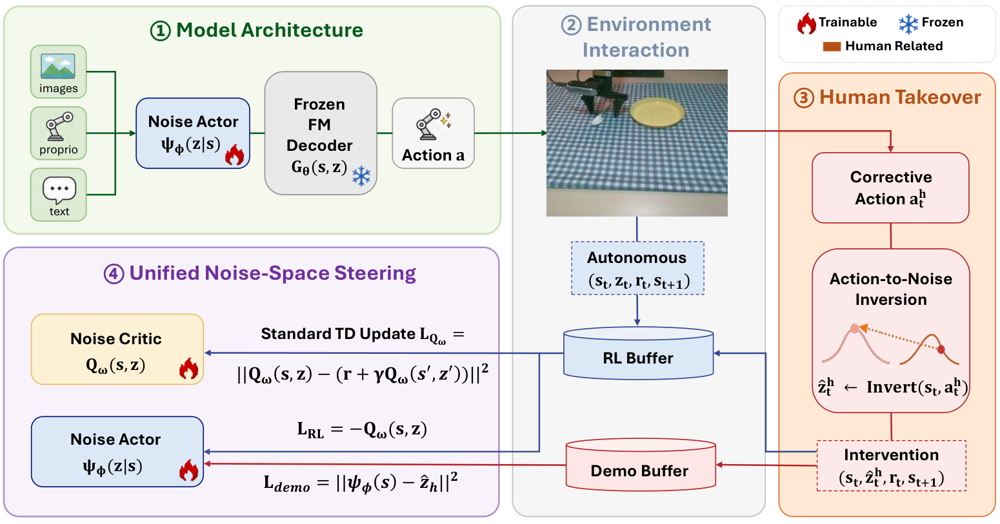

NeurIPS 2026
ICML 2026 RLxF Workshop

I am a second-year Ph.D. student at the University of Technology Sydney, supervised by Prof. Min Xu. I am a recipient of the UTS President's Scholarship, which fully funds my Ph.D. studies. I am currently visiting Microsoft Research Asia, working with Dr. Chuheng Zhang and Dr. Li Zhao.
My research focuses on Post-Training for Embodied AI, particularly Noise Space Learning (NSL) for diffusion-based models. I am also interested in building embodied agentic frameworks capable of Recursive Self-Improvement (RSI). My previous research also explored reasoning optimization and process supervision for large language models.
I am currently seeking visiting research or internship opportunities in embodied AI in the U.S. Happy to connect and discuss potential opportunities.
Our paper, Noise Space Learning for VLA Adaptation, is now available on arXiv.
Two papers, UniSteer and RAW-Dream, have been accepted to NeurIPS 2026!
ReTVL has been accepted to CoRL 2026!
41891/42891 Cloud Computing Infrastructure –